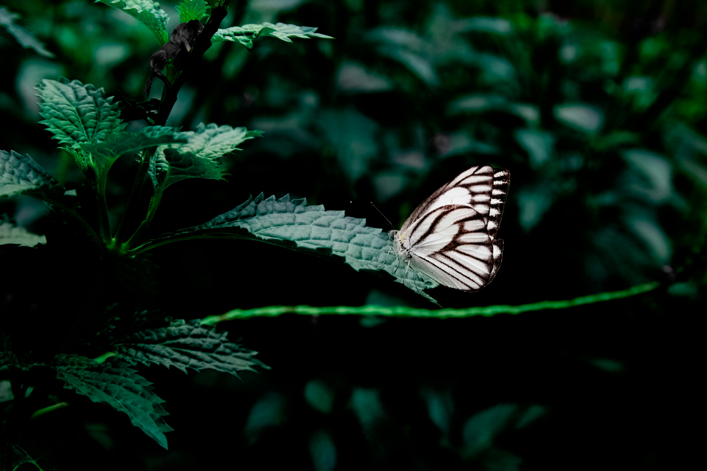

Fluturele este o insectă din ordinul Lepidoptera. În funcție de context, mai ales în limbajul popular, conceptul de fluture include uneori și moliile. Ca și toate Lepidopterele, fluturii sunt de remarcat pentru ciclul lor de viață neobișnuit, cu un stadiu larvar de omidă, un stadiu inactiv de pupă și o metamorfoză spectaculoasă într-o formă familiară de adult cu aripi colorate. Deoarece cele mai multe specii zboară ziua, atrag de regulă atenția. Diversele modele formate pe aripile colorate și zborul lor extravagant și grațios au făcut ca observarea fluturilor să devină un hobby popular. Fluturii se clasifică în fluturi adevărați (superfamilia Papilionoidea), fluturi hesperiide (superfamilia Hesperioidea, engleză skipper), și fluturi-molii (superfamilia Hedyloidea). Aripile, corpurile și picioarele fluturilor, ca și în cazul moliilor, sunt acoperite peri fini. Spre deosebire de molii, fluturii sunt cei mai activi în timpul zilei și sunt, de obicei, viu colorați sau au un model spectaculos. La fel ca toate Lepidopterele, fluturii sunt de remarcat pentru ciclul lor de viață neobișnuit, cu un stadiu larvar de ou, omidă, un stadiu inactiv de pupă și o metamorfoză spectaculoasă într-o formă de adult cu aripi colorate. Larvele și adulții majorității fluturilor se hrănesc cu plante, adesea doar părți specifice ale unor tipuri specifice de plante.
